Personagens e Elenco
- Voltar a Pagina Inicial
- Benjamin (Palhaço Pangaré)
- Valdemar (Palhaço Puro Sangue)
- Guilhermina
- Aldo
- Lola
- Dona Zaira
- Tony Lo Bianco
- Robson Félix
- João Lorota
- Chico Lorota
- Lara Lane
- Gordini
- Glória
- Justine
- Borrachinha
- Ana
- Tonha
- Nei
- Juca Bigode
- Delegado Justo
- Beto / Deto Papagaio
- Atendente da Prefeitura
- Garçonete do bar do Tim
- O Homem da Bicicleta
- Nanci
- Prefeito Romualdo
- Vendedor da loja
- Bombeiro Augusto
Benjamin (Palhaço Pangaré)
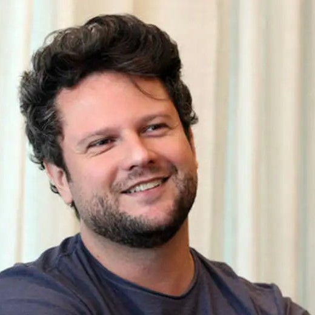- Benjamin é o protagonista do filme, um palhaço de circo conhecido como Pangaré. Ele está em uma jornada de autodescoberta, buscando um novo propósito em sua vida além do circo. Benjamin é um personagem complexo, lutando com suas próprias inseguranças e desejos de liberdade.
Intérprete:
- Nome completo: Selton Figueiredo Melo;
- Nascimento: Passos - MG, 30 de dezembro de 1972 (51 anos);
- Residência: Rio de Janeiro - RJ;
- Nacionalidade: brasileiro;
- Ocupação: ator, dublador, diretor, produtor
- Período de atividade: 1981 – presente.
Valdemar (Palhaço Puro Sangue)
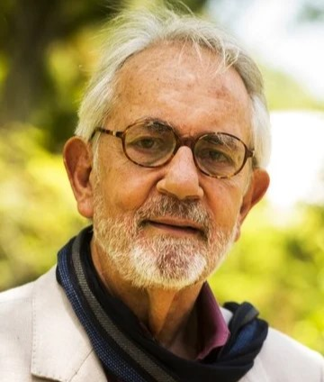- Valdemar é o pai de Benjamin e também um palhaço de circo. Ele é uma figura paterna para Benjamin, tentando convencê-lo a continuar na vida circense e seguir seus passos como palhaço.
Intérprete:
- Nome completo: Paulo José Gómez de Sousa;
- Nascimento: Lavras do Sul - RS, 20 de março de 1937;
- Morte: Rio de Janeiro - RJ, 11 de agosto de 2021 (84 anos)
- Nacionalidade: brasileiro;
- Ocupação: ator, roteirista, diretor;
- Período de atividade: 1955 – 2014.
Guilhermina
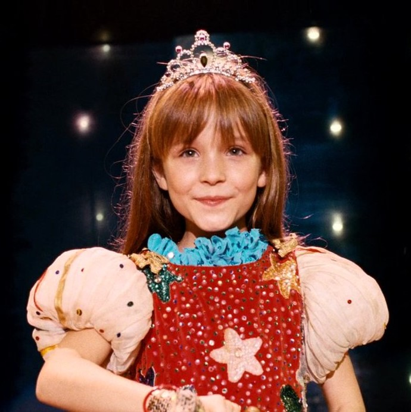- Guilhermina é uma criança que vive no circo, junto de seus pais.
Intérprete:
- Nome completo: Larissa Manoela Elias Frambach;
- Nascimento: Guarapuava - PR, 28 de dezembro de 2000 (23 anos);
- Residência: Rio de Janeiro - RJ;
- Nacionalidade: brasileira;
- Ocupação: atriz, cantora, empresária;
- Período de atividade: 2005 – presente.
Aldo
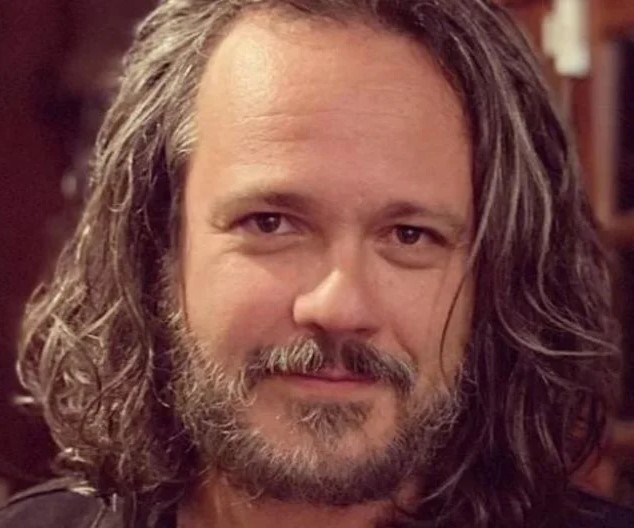- Aldo é Marido de Ana, Ele é dono de uma loja de peças automotivas, Chamada "Aldo Auto Peças" que fica localizada na cidade de Passos - MG.
Intérprete:
- Nome completo: Danton Figueiredo Mello;
- Nascimento: Passos - MG, 29 de maio de 1975 (48 anos);
- Residência: Rio de Janeiro - RJ;
- Nacionalidade: brasileiro;
- Ocupação: ator, dublador;
- Período de atividade: 1985 – presente.
Lola
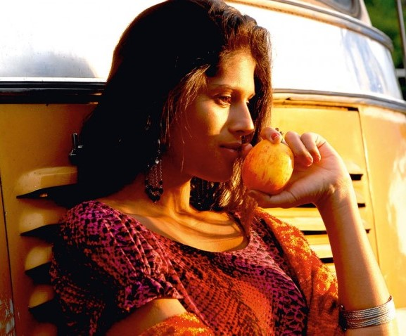- Lola foi por um tempo a namorada de Valdemar, ela também fazia parte do número final do espetáculo
Intérprete:
- Nome completo: Giselle Ingrid Motta dos Santos;
- Nascimento: Rio de Janeiro - RJ, 15 de julho de 1982 (41 anos);
- Nacionalidade: brasileira;
- Ocupação: atriz, bailarina e modelo.
Dona Zaira
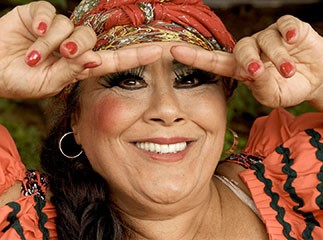- Dona Zaira é uma figura materna para Benjamin no circo. Ela é uma mulher sábia que compreende os conflitos internos do protagonista e o apoia em sua jornada de autodescoberta.
Intérprete:
- Nome completo: Teuda Magalhães Fernandes;
- Nascimento: Belo Horizonte - MG, 1 de novembro de 1941 (82 anos);
- Nacionalidade: brasileira;
- Ocupação: atriz.
Tony Lo Bianco
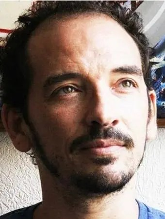- Tony Lo Bianco é um mágico talentoso do circo, ele passa algumas informações para Benjamim antes de cada espetáculo, informações como: nome do bebado da cidade, nome do prefeito e nome da mulher do prefeito.
Intérprete:
- Nome completo: Carlos Eduardo Fávero Vasconcellos;
- Nascimento: Rio de Janeiro - RJ, 3 de setembro de 1970 (53 anos);
- Nacionalidade: brasileiro;
- Ocupação: ator, autor, iluminador e diretor teatral;
Robson Félix
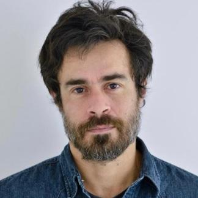- Robson Félix é um acrobata do circo.
Intérprete:
- Nome completo: Eromir Cordeiro Moura Júnior;
- Nascimento: Maceió - AL, 19 de maio de 1977 (46 anos);
- Nacionalidade: brasileiro;
- Ocupação: ator;
- Período de atividade: 1998 – presente.
João Lorota
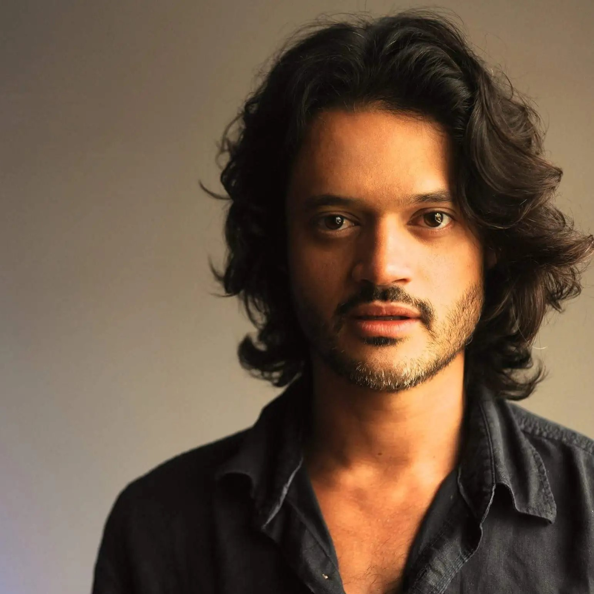- João Lorota faz dupla com Chico Lorota, eles são músicos do circo.
Intérprete:
- Nome completo: Álamo Facó Soares Drummond;
- Nascimento: Rio de Janeiro - RJ, 10 de abril de 1981 (42 anos);
- Nacionalidade: brasileiro;
- Ocupação: ator, diretor e escritor;
- Período de atividade: 1998 – presente.
Chico Lorota
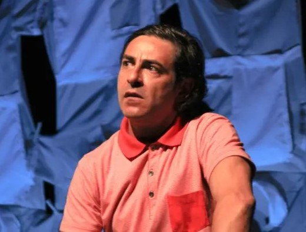- Chico Lorota faz dupla com João Lorota, eles são músicos do circo.
Intérprete:
- Nome completo: Hossein Minussi;
- Nascimento: Santiago - RS, 01 de agosto 1965 (58 anos);
- Nacionalidade: brasileiro;
- Ocupação: ator;
Lara Lane
- Lara Lane é uma das integrantes do circo.
Intérprete:
- Nome completo: Maíra Chasseraux;
- Nacionalidade: brasileira;
- Ocupação: atriz, locutora, dubladora;
Gordini
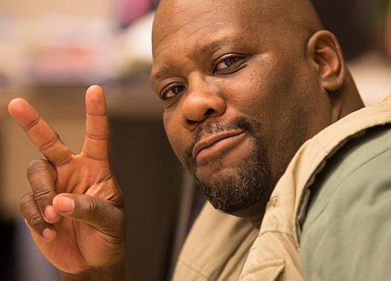- Gordini realiza as apresentações que precisam de força física dentro do espetáculo.
Intérprete:
- Nome completo: Sérgio André Texeira;
- Nacionalidade: brasileiro;
- Nascimento: Rio de Janeiro - RJ, 15 de fevereiro de 1970 (54 anos)
- Ocupação: ator, diretor, roteirista e personal acting coach.
Glória
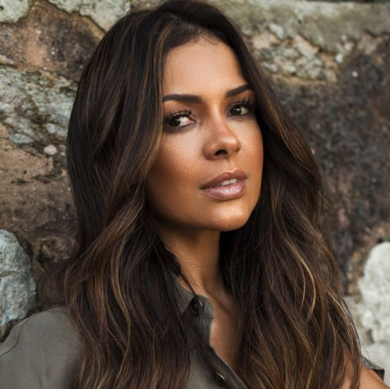- Glória é uma das integrantes do circo.
Intérprete:
- Nome completo: Michelle Martins;
- Nacionalidade: brasileiro;
- Nascimento: Curitiba - PR, 27 de Novembro de 1979 (44 anos)
- Ocupação: atriz.
Justine
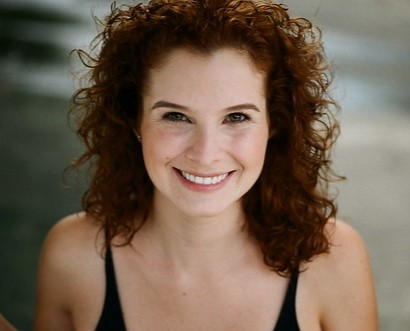- Justine é uma das integrantes do circo, ela é a mãe de Guilhermina.
Intérprete:
- Nome completo: Bruna Chiaradia;
- Nacionalidade: brasileira;
- Ocupação: atriz, professora, pesquisadora.
Borrachinha
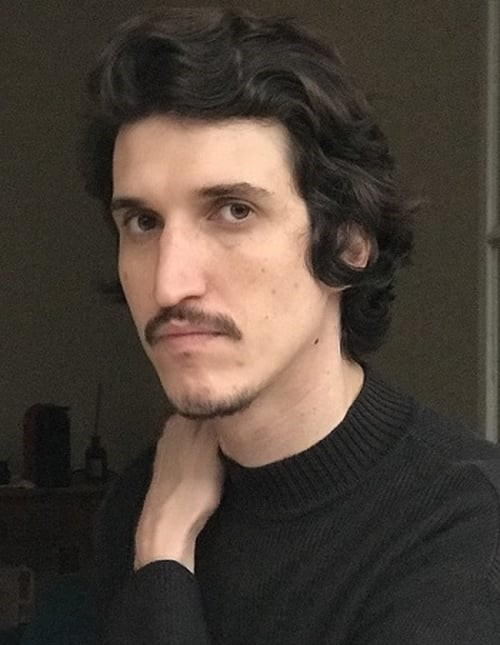- Borrachinha é um dos membros do circo que adiciona humor à narrativa e à dinâmica do grupo.
Intérprete:
- Nome completo: Renato Macedo;
- Nacionalidade: brasileiro;
- Ocupação: ator.
Ana
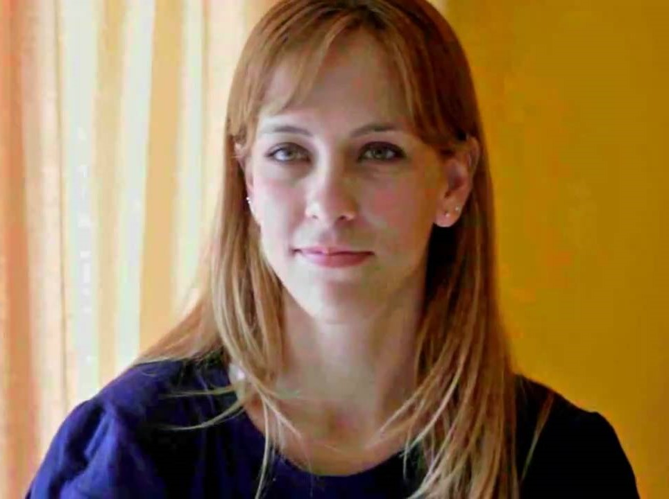- Ana é esposa de Aldo, ela trabalha junto com o marido no Aldo Auto Peças na cidade de Passos - MG.
Intérprete:
- Nome completo: Pritty Borges;
- Nacionalidade: brasileira;
- Ocupação: atriz.
Tonha
- Tonha é uma moradora local da cidade, ela interaje com Benjamin em frente ao Bar do Tim.
Intérprete:
- Nome completo: Fabiana Karla Sousa Simões Barbosa;
- Nascimento: Recife - PE, 30 de outubro de 1975 (48 anos);
- Nacionalidade: brasileira;
- Ocupação: atriz, humorista, apresentadora, dubladora, diretora, escritora;
- Período de atividade: 1990 – presente.
Nei
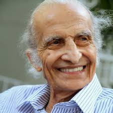- Nei foi por um tempo o patrão de Benjamin, ele é responsável por fazer uma virada de chave na cabeça de Benjamin.
Intérprete:
- Nome completo: Jorge Rodrigues Loredo;
- Nascimento: Rio de Janeiro - RJ, 7 de maio de 1925;
- Morte: Rio de Janeiro - RJ, 26 de março de 2015 (89 anos);
- Nacionalidade: brasileiro;
- Ocupação: advogado, ator e humorista;
Juca Bigode
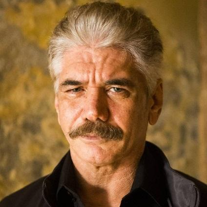- Juca Bigode é o responsável por trazer à tona a frase mais importante do filme. Após um conversa com Valdemar
Intérprete:
- Nome completo: Joaquim Antunes;
- Nascimento: Janaúba - MG, 28 de agosto de 1960 (63 anos);
- Nacionalidade: brasileiro;
- Ocupação: ator, cantor, compositor, produtor, diretor;
- Período de atividade: 1986 – presente.
Delegado Justo
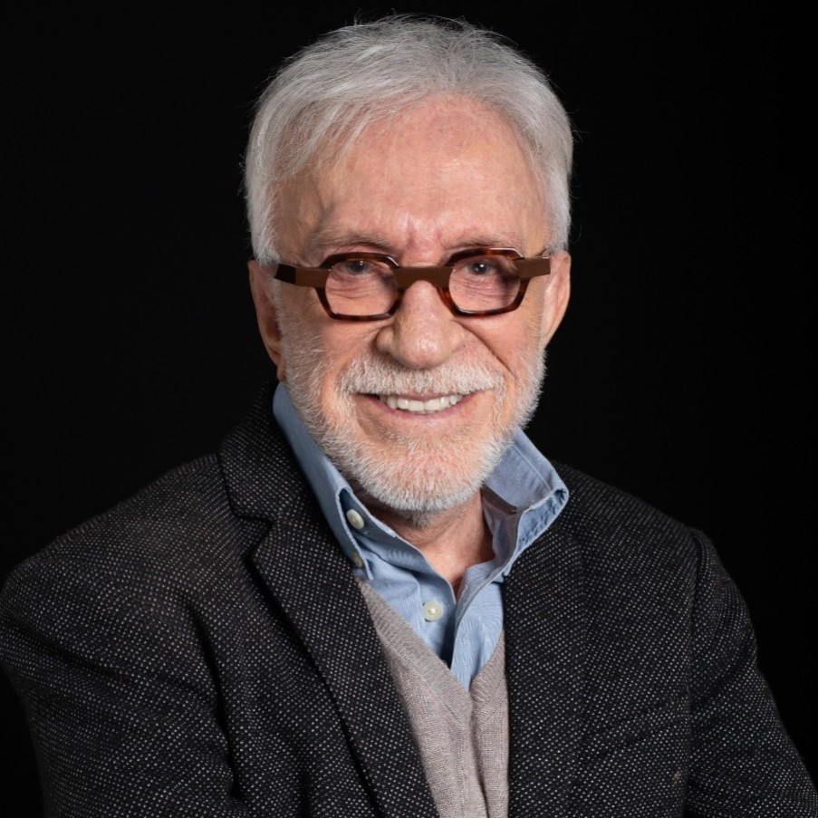- Delegado Justo é uma figura da lei, interagindo com os personagens principais durante o filme.
Intérprete:
- Nome completo: Moacir de Oliveira Franco;
- Nascimento: Ituiutaba - MG, 05 de outubro de 1936 (87 anos);
- Nacionalidade: brasileiro;
- Ocupação: ator, cantor, compositor, autor, apresentador de TV, político;
Beto e Deto Papagaio
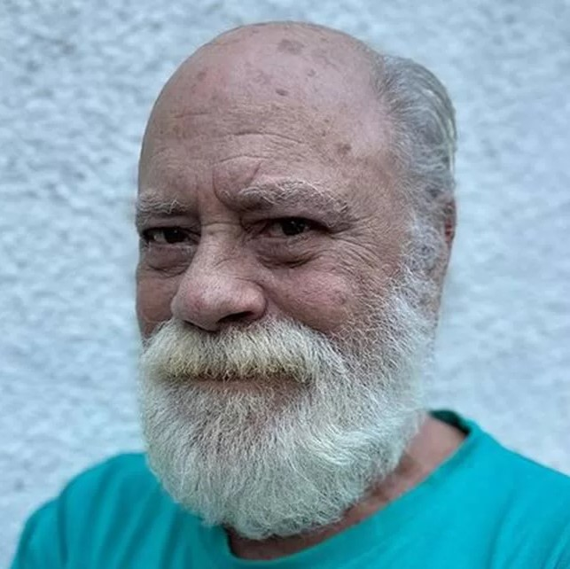- Beto e Deto Papagaio são irmãos gêmeos que supostamente estão sem se falar a 15 anos.
Intérprete:
- Nome completo: Antônio Carlos de Sousa Pereira;
- Nascimento: Campos dos Goytacazes - RJ, 22 de junho de 1948 (75 anos);
- Nacionalidade: brasileiro;
- Ocupação: ator, humorista, empresário, escritor;
- Período de atividade: 1968 – presente.
Atendente da Prefeitura
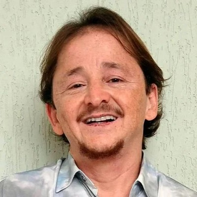- O Atendente da Prefeitura é a pessoa com quem Benjamin interage em busca de fazer seu RG.
Intérprete:
- Nome completo: Luiz Alves Pereira Neto;
- Nascimento: Barretos - SP, 16 de setembro de 1966 (57 anos);
- Nacionalidade: brasileiro;
- Ocupação: músico, ator, apresentador.
Garçonete do bar do Tim
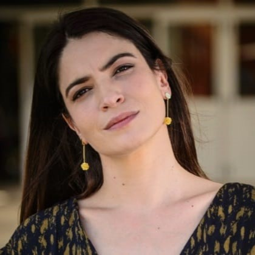- A Garçonete do bar do Tim é uma moradora local que interage com Robson Félix durante sua estadia na cidade. Ela é a Esposa do Dono do Bar do Tim
Intérprete:
- Nome completo: Maria Manoella Abreu Teixeira;
- Nascimento: Rio de Janeiro - RJ, 8 de junho de 1978 (45 anos);
- Nacionalidade: brasileira;
- Ocupação: atriz.
O Homem da Bicicleta
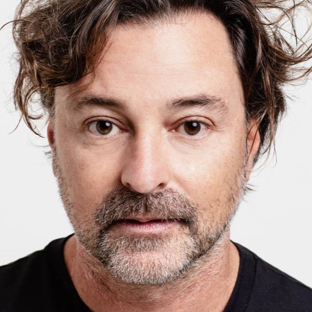- O Homem da Bicicleta é uma pessoa um pouco incomum, por exemplo: quando alguém lhe pergunta alguma informação sobre como chegar a determinado local ele, enrola a pessoa falando de uma maneira confusa, dps oferece um mapa para a pessoa comprar, mas o mapa não é do lugar onde a pessoa está tentando chegar, esse é um mapa da venezuela.
Intérprete:
- Nome completo: Emílio Orciollo Netto;
- Nascimento: São Paulo - SP, 15 de janeiro de 1974 (50 anos);
- Residência: Rio de Janeiro - RJ;
- Nacionalidade: brasileiro;
- Ocupação: ator, produtor e diretor;
- Período de atividade: 1992 – presente.
Nanci
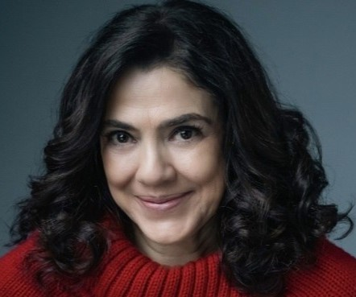- Nanci é a esposa do Prefeito Romualdo, ela é dona de um salão de beleza.
Intérprete:
- Nome completo: Martha Meola;
- Nascimento: São Paulo - SP, 13 julho 1966 (57 anos);
- Residência: São Paulo - SP;
- Nacionalidade: brasileira;
- Ocupação: atriz, locutora;
Prefeito Romualdo
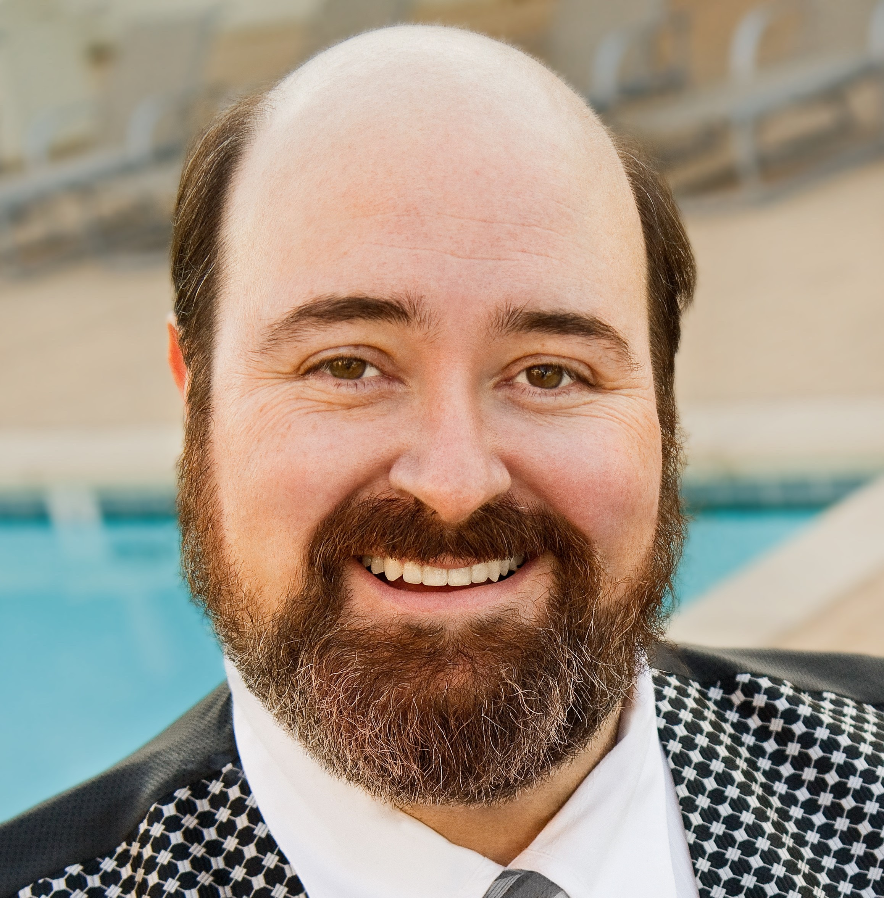- Prefeito Romualdo é o prefeito da primeira cidade a qual o circo se apresenta, ele é marido de Nanci.
Intérprete:
- Nome completo: Phil Miler;
- Nacionalidade: brasileiro;
- Ocupação: atriz, locutor; Atividade 1999-presente
- Atividade: 1999 - presente.
Vendedor da loja
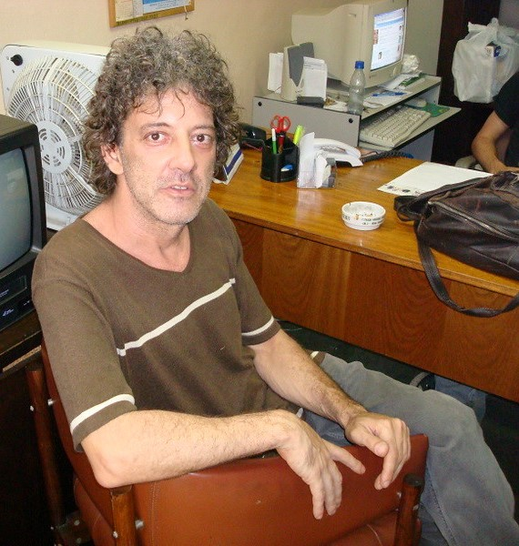- O Vendedor da loja é quem interaje com Benjamin, após Benjamin quere comprar um ventilador.
Intérprete:
- Nome completo: Cico Caseira;
- Nacionalidade: brasileiro;
- Ocupação: ator;
Bombeiro Augusto
- O Bombeiro Augusto é quem interaje com Benjamin, pedindo a Benjamin para ver o alvará do circo.
Intérprete:
- Nome completo: Flávio Pardal;
- Nascimento: São Paulo - SP, 19 de setembro de 1972 (51 anos);
- Nacionalidade: brasileiro;
- Ocupação: ator, diretor teatral;
- Atividade: 1995 - presente.